上下文越长，KV cache 越吃显存和带宽。SGLang、Qwen 与 NVIDIA 联合把 KV cache 从 FP8 推进到 4 bit 的 NVFP4，K/V 读取量降到 FP8 的约 56%，同并发 decode 吞吐提升 26% 到 30%，容量驱动下最高提升 78.46%。实现结构、kernel 设计与精度、性能实测，一次讲清。
KV cache 是现代 LLM 推理系统的基础组件。智能体会话里多轮对话的上下文以 key 和 value 的形式缓存在 GPU 显存中，供后续解码步骤复用：每生成一个新 token，新的 query 都要 attend 到相关的历史 KV。上下文窗口越大，KV cache 的存储和读取对显存容量与带宽的压力就越大。
应对这种压力有两条互补的路：扩大缓存可用的存储，或者减少每个 token 存储的数据量。
GPU 显存为活跃 KV 数据提供快速访问，但容量有限。服务大量用户或长时间运行的会话时，系统无法让所有会话的缓存一直常驻。分层 KV 缓存 HiCache 把缓存层级扩展到主机内存和分布式存储，让系统能在 GPU 之外保留更多上下文。
KV cache 量化从另一侧解决问题。用 FP8 而不是 BF16 存 K/V，数据占用大约减半，解码时要读的字节数也随之减少，当 KV 读取是带宽瓶颈时能直接转化为性能。代价是数值精度：低位宽带来量化误差，误差必须小到不破坏有用的模型行为。FP8 KV 缓存已经广泛使用，压到 4 bit 难得多，因为量化误差更大。
NVIDIA 随 Blackwell 架构引入了 NVFP4 数据格式。它把 4 bit E2M1 数值与两级缩放结合：每 16 个值一个 FP8 block scale，再加一个 FP32 张量级 scale。相比单一全局 scale，这种结构对动态范围的控制更细，有助于压低量化误差；Blackwell 硬件也为这一格式提供了原生支持，计算效率与灵活性都适合 KV cache 量化。
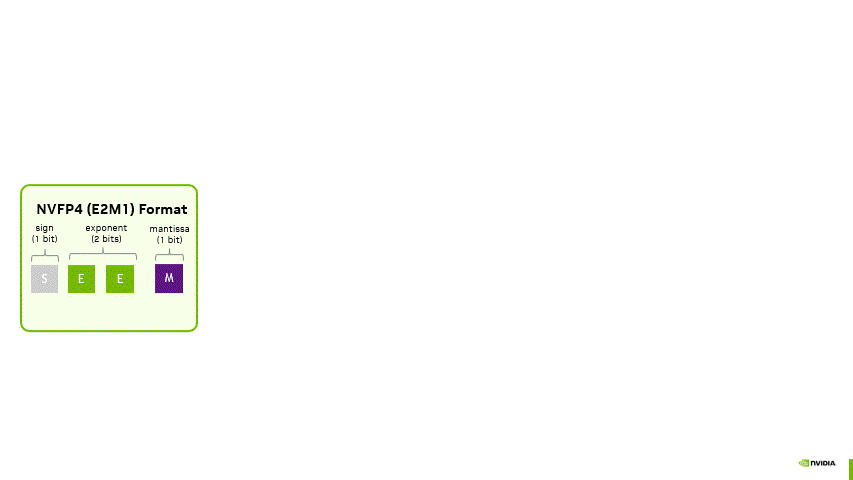
下文先讲 NVFP4 KV cache 在 SGLang 中的实现，再看它在各类负载下的精度与性能表现。
实现把 SGLang 的分页 KV cache 系统接到三条注意力路径上：初始 prefill、分块 prefill 或 extend、decode。SGLang 负责管理缓存及其辅助缓冲区，每条路径的数据流各不相同。
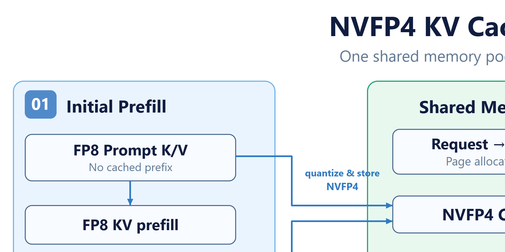
初始 prefill 处理没有缓存前缀的 prompt。经过 QKV 投影和位置编码后，注意力直接作用于当前 prompt 的 BF16 Q 与 FP8 K/V；同一份 K/V 同时从 FP8 量化为 NVFP4，写入持久缓存，供后续 extend 和 decode 步骤使用。
这条路径里，量化后的 NVFP4 KV 数据写入缓存，但注意力消费的是量化前的 FP8 KV，阶段内不从 KV cache 读任何数据。
分块 prefill 一次只处理 prompt 的一部分，extend 则是向已有上下文追加新 token。两者都面对两个 K/V 来源：缓存前缀和当前分块。
对缓存前缀，SGLang 取出相关 NVFP4 条目，反量化后填充 FP8 工作区；一对 K/V 工作区缓冲区跨层共享，避免每层都分配一整份 FP8 工作区。
当前分块走另一条路：KV 数据在 QKV 投影后拷入 FP8 工作区，注意力像初始 prefill 一样作用于工作区里的 KV；这份 KV 同样被量化存入 NVFP4 缓存，供后续步骤使用。
decode 阶段，注意力 kernel 直接从 NVFP4 KV cache 读数据，在 kernel 内部即时反量化为 FP8，再用反量化后的值做后续计算，因此 decode 不需要单独的反量化操作。
与 prefill 不同，decode 时 query 序列长度很短，KV 序列长度往往大得多，注意力性能完全受显存读取限制。把反量化放进 kernel，省掉了单独反量化操作读写整个 KV cache 的额外显存往返，性能提升可观。
当前 SM120 上的实现消费 BF16 query 和 NVFP4 KV，矩阵乘法在 BF16 上进行。
kernel 先把打包的 K/V tile 和对应的 E4M3 block scale 载入共享内存，再在寄存器中解包并缩放：用 cvt.rn.bf16x2.e2m1x2 把成对的 E2M1 值转成 BF16，E4M3 block scale 也转型为 BF16，打包乘法指令把缩放因子作用到成对的值上；随后注意力矩阵乘法作用于反量化后的 K/V，全局 K/V scale 通过注意力 BMM 的缩放参数传入。
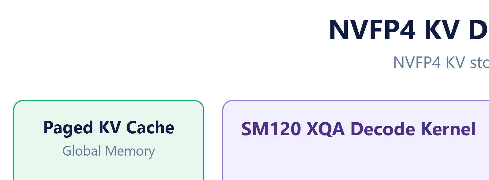
每 16 个 NVFP4 值占 8 字节打包数据加 1 字节 block scale 元数据，对比 FP8 的 16 字节，即 （8+1）/16：同样的 K/V 数量，打包数据加 block scale 只需 FP8 约 56% 的存储，这里不计入少量全局 scale 元数据和池或工作区开销。这正是降低 GPU 显存读取流量、提升 decode 效率的空间。
我们在 Qwen3.5-397B-A17B 和 Qwen3.8-27B 上对比 FP8 与 NVFP4 KV cache，基准覆盖 GSM8K、GPQA-Diamond、AIME 2025，以及只在 Qwen3.8-27B 上跑的 SWE-bench。两组配置使用相同的 FP8 模型权重；SGLang 里用 --kv-cache-dtype nvfp4 选择 NVFP4 KV 存储，复现步骤见原文附录。
GSM8K 评测一次，预留 8 个样本做 few-shot 提示后共 1,311 道计分题；GPQA-Diamond 和 AIME 因任务方差较大各评测两轮，下图汇报两轮汇总的准确率。
Qwen3.5-397B-A17B 上的差异很小。NVFP4 在 GSM8K 上少对了一道题，差距约 0.08 个百分点；GPQA-Diamond 和 AIME 2025 的答对题数完全一致。
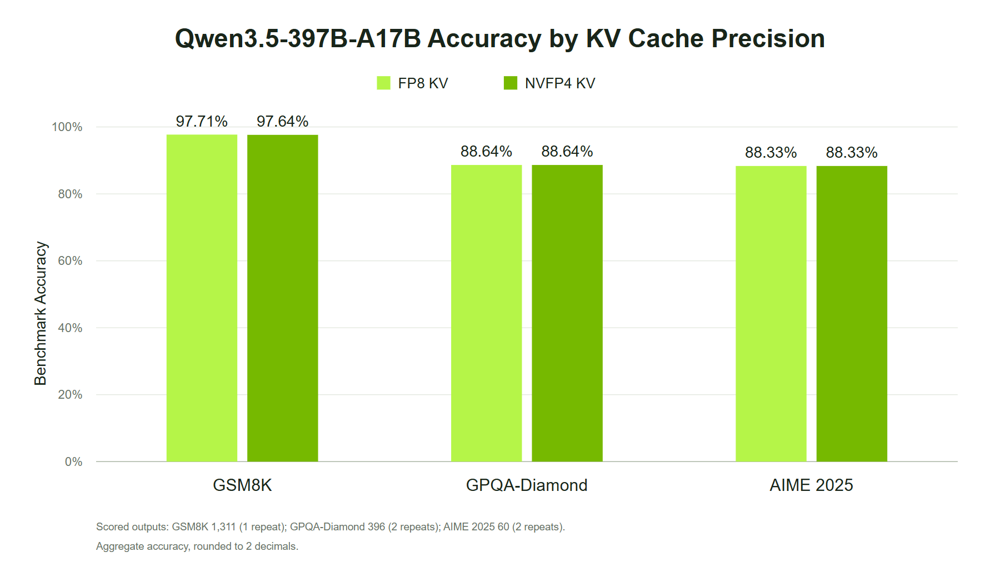
Qwen3.8-27B 则表现出任务相关的差异。NVFP4 在 GSM8K 上比 FP8 低 0.31 个百分点，GPQA-Diamond 低 1.01 个百分点；AIME 2025 在 thinking/xhigh 模式下与 FP8 持平，都是 98.33%。SWE-bench Verified 上 NVFP4 解决 500 题中的 381 题（76.20%），FP8 为 389 题（77.80%），差 1.60 个百分点。
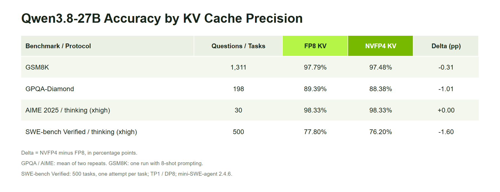
这次测量里更大的模型更不敏感，但两个模型加一小撮任务还不足以确立模型大小与量化容忍度之间的一般关系。结果对 NVFP4 KV 缓存是鼓励性的，部署前仍需按任务做验证。
性能测试在单张 NVIDIA RTX PRO 6000 Blackwell Server Edition GPU 上跑 Qwen3.8-27B，输入长度固定为 32,768、163,840 和 1,048,576 token，每个请求固定输出 1,024 token。两组配置使用相同的 FP8 权重，固定长度测试关闭了 radix caching，复现步骤见原文附录。
1M 负载是纯性能实验，用了显式的上下文长度覆盖，模型原生上下文上限是 262,144 token。1M 时 NVFP4 的 static-memory fraction 取 0.75，给临时 prefill 工作区留空间，FP8 为 0.90；更短的上下文长度下两者都用 0.90。
我们设了两个对照点，把同并发下的性能与能承载更多并发带来的收益分开看。
iso-concurrency 测试让 FP8 与 NVFP4 KV 在相同的实际 decode 并发下对比。调度器在 32K、160K 和 1M 下都稳定在 44、10、1 个 decode 常驻请求。
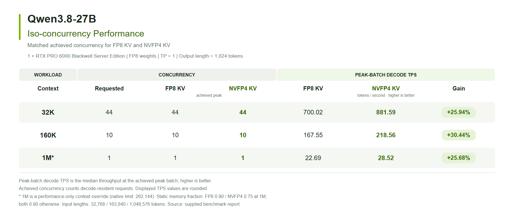
NVFP4 KV 在这些负载下把峰值 batch decode 吞吐提升约 26% 到 30%。峰值 batch 大小一致，结果与 KV 读取流量减少、解码变快的推断一致。
iso-capacity 测试把并发继续往上加，用满 NVFP4 能多驻留的请求。这里的同容量指同一块 GPU 上容量驱动的对比，两种 KV 格式可用的 KV token 槽位数不同。
32K 时实际并发从 FP8 的 44 提高到 NVFP4 的 70，160K 从 10 到 15，1M 从 1 到 2；峰值 batch decode 吞吐分别提升 37.37%、57.75% 和 78.46%。
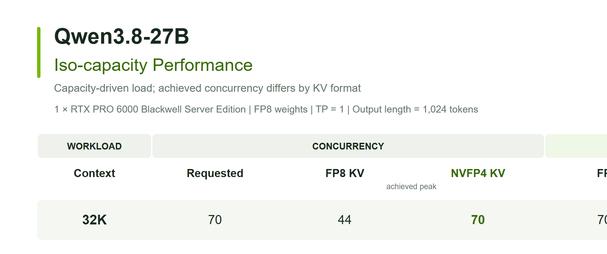
这些收益来自更紧凑的 KV 读取加上更大的 batch。更高的并发能把注意力之外的矩阵乘法也喂饱。图 8 的 Pareto 曲线进一步展示了 NVFP4 KV 的优势：相近并发下，NVFP4 KV 的输出吞吐和交互性都更高，同时还能服务更高的并发，把输出吞吐再往上推。
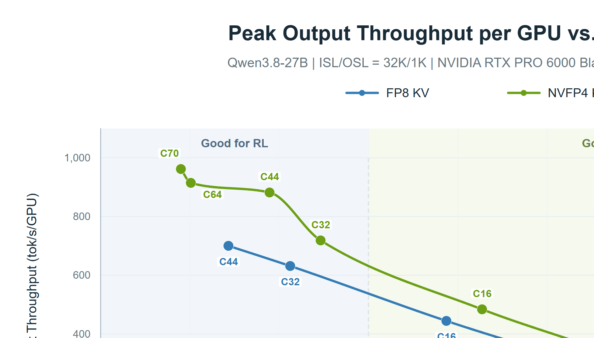
decode 阶段 KV cache 读取是主要瓶颈，prefill 阶段则是计算受限。我们的方案只改了 KV 数据类型，计算数据类型不变，prefill 注意力本身没有性能收益。同并发下 NVFP4 的平均首 token 延迟（TTFT）只增加了 0.20% 到 0.40%，轻微变慢主要来自 KV 量化或反量化的开销。
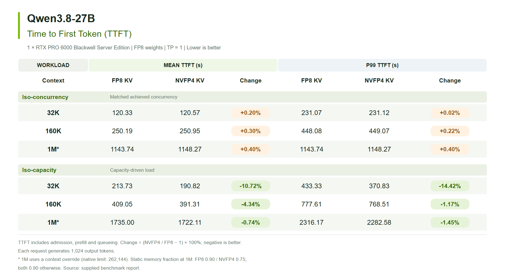
容量驱动负载下，平均 TTFT 反而下降 0.74% 到 10.72%。TTFT 包含准入、prefill 和排队，这部分改善不能只归功于 prefill 计算变快：更大的常驻缓存让更多请求无需等其他请求释放 KV 槽位就能推进，例如 1M 时 NVFP4 能同时容纳两个完整请求，FP8 只能容纳一个。
上面的 decode 吞吐收益也不应读成端到端加速比。prompt 很长时，即使 decode 明显变快，prefill 仍可能主导总耗时。
智能体负载比固定输入输出的基准复杂：多轮之间交替 extend 和 decode，历史里常带工具输出和中间推理，动辄几十万 token。KV cache 的价值取决于下一轮到来时还有多少历史可用。
需要的前缀一旦从所有可用缓存层级中被逐出，服务端就得重算。对几十万 token 的上下文，这会明显拉高首 token 延迟，还占用本可服务新请求的资源。
NVFP4 创造了把更多工作集留在 GPU 上的机会。打包数据的计算给出约 1.78 倍于 FP8 的理想容量比，未计工作区等显存开销，实际可用容量取决于负载与服务配置。让更多前缀常驻，能在内存压力本会触发逐出的场景下减少重复 prefill。
收益取决于负载的复用模式和服务配置。分层缓存与 KV 量化可以互补：一个扩展缓存层级，一个压缩层级里内容的大小。
我们在 8 卡 NVIDIA RTX 6000D 节点上以 TP8 并行测 Qwen3.5-397B-A17B，NVFP4 与 FP8 KV 各扫一遍 1 到 16 的并发，基准窗口 1,200 秒。
结果显示，低并发（C ≤ 8）时 NVFP4 KV 与 FP8 KV 表现相当；并发超过 12 后，FP8 KV 的吞吐和交互性急剧下滑，NVFP4 KV 的吞吐仍在上升。
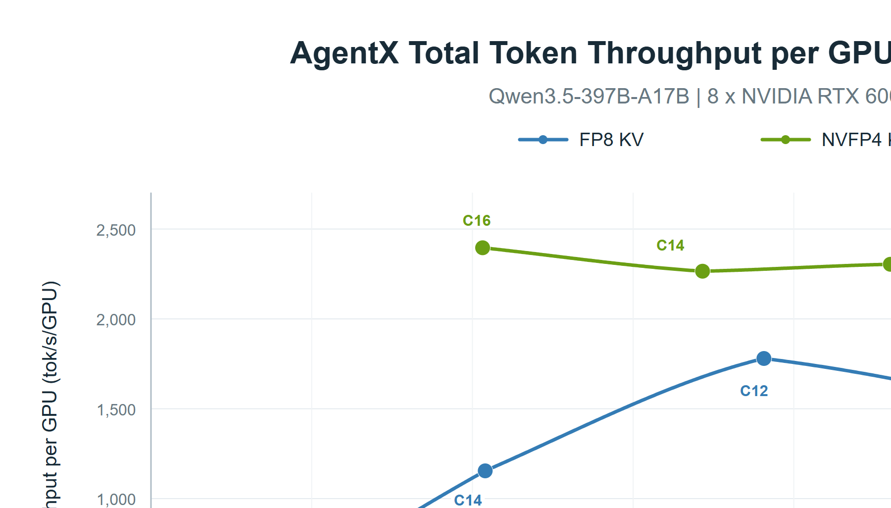
输入 token 缓存命中率分析给出了证据：高并发下 FP8 KV 的缓存命中率远低于 NVFP4 KV。
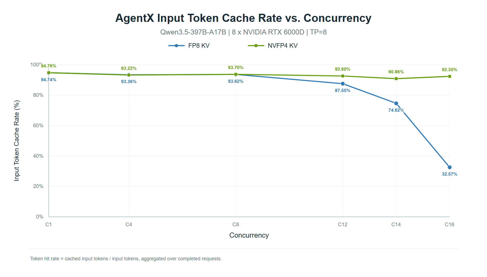
SGLang 当前的 NVFP4 KV 支持仍处于实验阶段，团队在持续改进，现状与进展如下：
● GPU 架构支持： 目前支持 SM12x 与 SM100/SM103，更多架构的适配在推进中，路线图见原文链接。
● 模型支持： 支持 GQA 模型和 Sparse MLA 模型，正在适配更多类型，例如 Sparse GQA。
● 精度改进： 实验没有使用 NVFP4 的每张量 FP32 全局 scale，为简单起见取 1.0；合适的校准可能减少数值上溢与下溢，进一步收窄 NVFP4 与 FP8 KV 的精度差距。团队也在试验朴素 NVFP4 KV 之外的更多 4 bit 配方，某些模型上可能进一步提升精度。
参考：https://www.lmsys.org/blog/2026-09-16-nvfp4-kv-cache